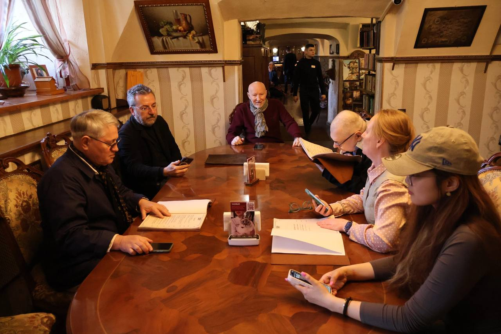
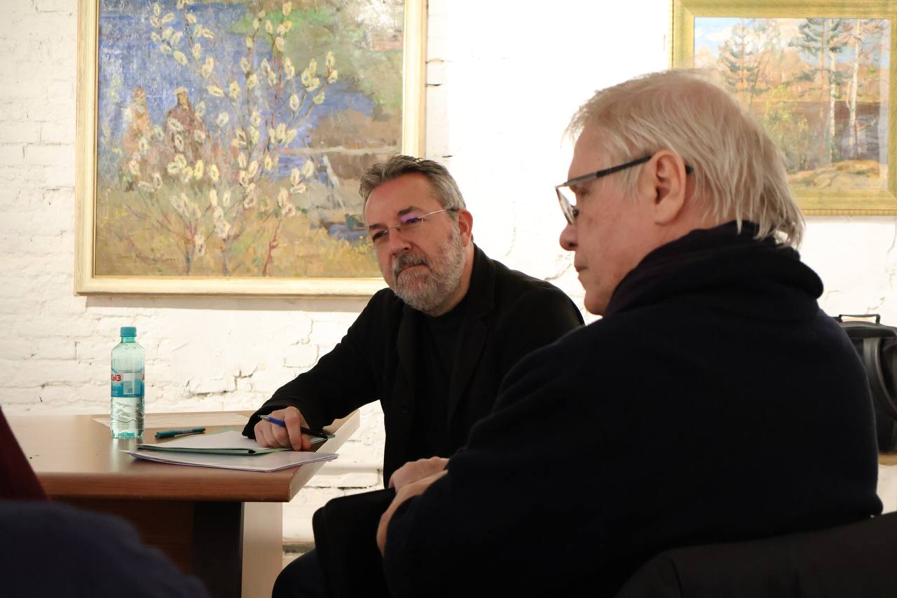
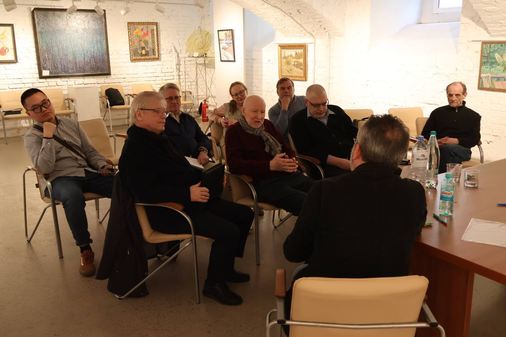
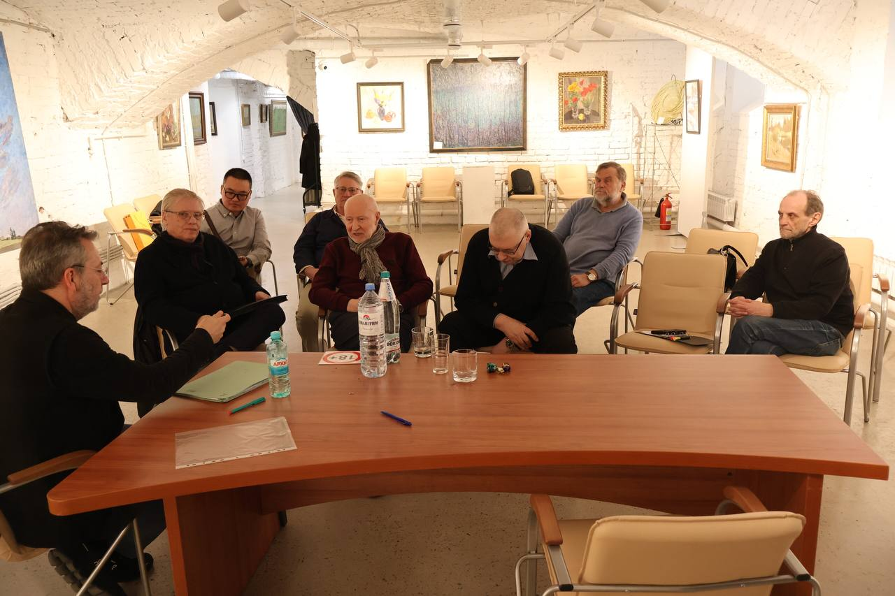

В Санкт-Петербургском Музее философии состоялся доклад сербского философа Петара Боянича — «Победоносный разум».
Встреча прошла 18 апреля 2026 года в Выставочном центре «Петербургский Художник» (наб. реки Мойки, 100) и стала ведущим событием в философско-просветительской программе музея.
Петар Боянич — последний ученик Жака Деррида — в духе своего учителя проанализировал проблему победы в разных исторических эпохах и в различных контекстах современности. Доклад получился насыщенным неожиданными поворотами и выводами, сопровождающими внутренние размышления. Интеллектуалы и любители философии, пришедшие на лекцию, искренне аплодировали лектору.
С идеями, изложенными в докладе, можно ознакомиться в статье Боянича «Победа как цель и победа как конец победы. Элементы наброска теории "победоносного разума"», опубликованной в журнале «Логос», том 35, № 6, 2025.



